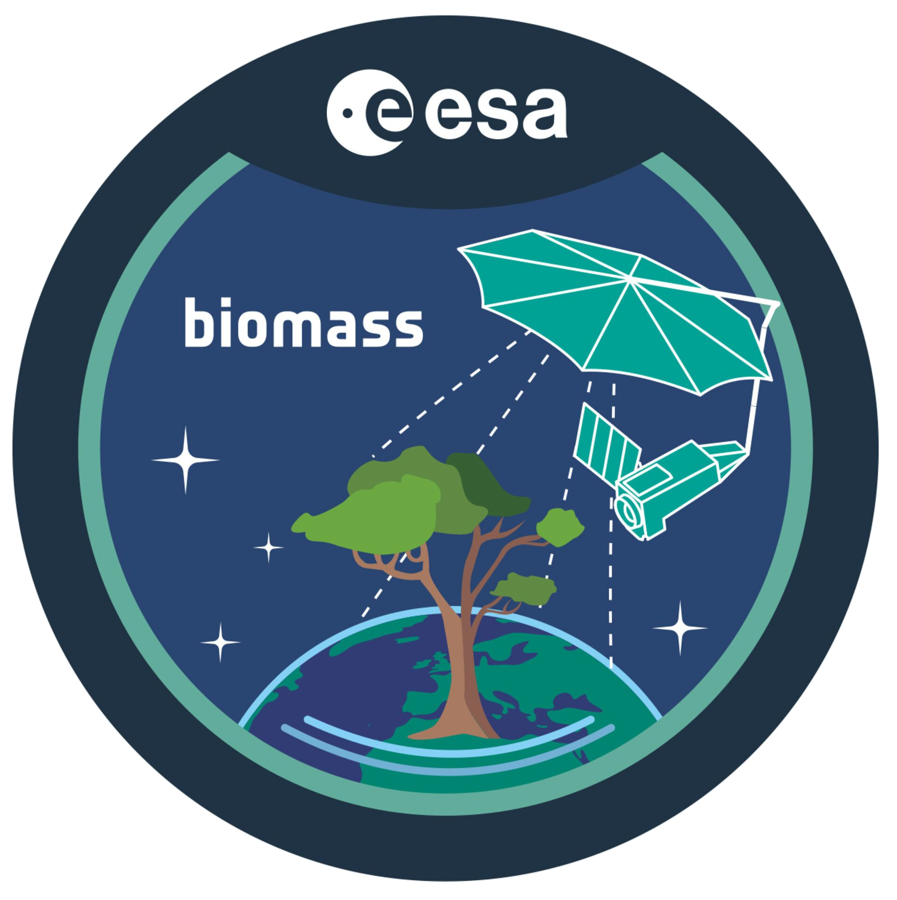
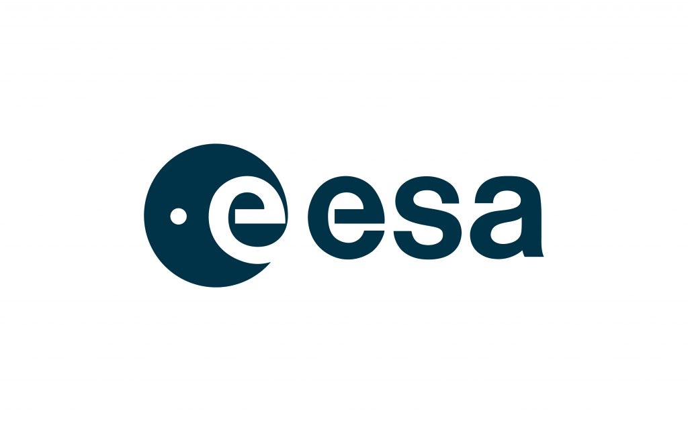
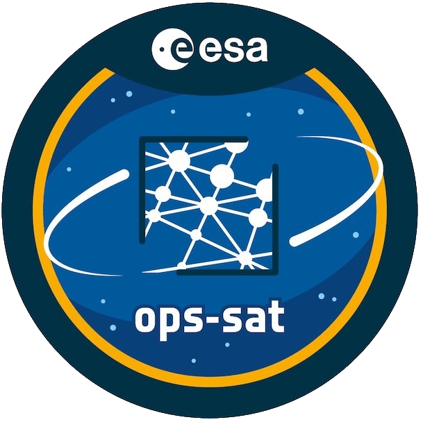
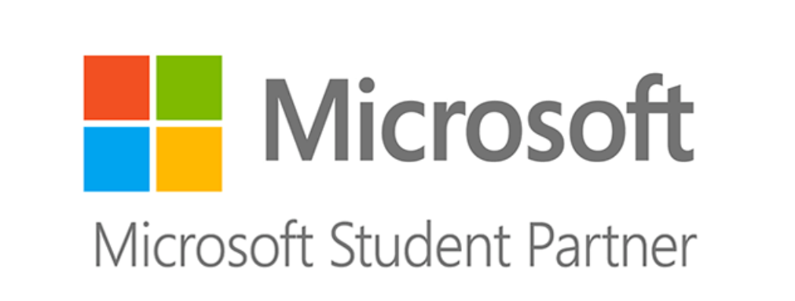

About me
Intro
Hello there! I'm a Spacecraft Engineer, working for Telespazio and ESA as an Analyst for Biomass, Spacecraft Database Operations engineer for the Earth Explorers, and lead Migration Engineer for the MOIS to ProToS migration.
I originally completed an i.MEng in Computer Engineering and followed up with an MSc in Space Engineering to move to less software-focused and more hands-on roles. In my free time I also do video game development, CGI, short film production, drawing, image editing, scale models, volunteer at an archaeological excavation, and play keyboards. Take a look around, feel free to download some of my published projects (so far everything is free), and don't hesitate to contact me if you want info on something. You are especially welcome to contact me about a PhD or research opportunity, or if you think you can put me into orbit ;) but we can always have a chat and network, prior relationships always help future colaboration.
What am I up to now?
I am attending the BIOMASS DB as Spacecraft Analyst and pushing for the migration from MOIS to ProToS I am also engaging in some science communication inside and outside ESOC, out of personal interest.
In my free time I'm working with the ESOC Film club on short films as well as on science communication and projects, including live presentations at conventions as well as a YouTube channel.
Quick Bio
 2025-Work: Analyst for Biomass and Migration Engineer for ProToS (Across interplanetary, Earth Explorers and Copernicus)
2023-Work: Acceptance Integration & Validation engineer, Innoflair contractor for EUMETSAT
2023-MOOC: Game Theory II, Stanford and University of British Columbia
2022-Work: Mission Control Engineer on OPS-SAT, TERMA contractor for ESA. Controlling, planning, debugging, maintaining and updating the spacecraft.
2021-Work: Still with TERMA, working on SCOS-2000 maintenance for ESA.
2021-MOOC: Game Theory, Stanford and University of British Columbia, via Coursera. 90%
2021-MOOC: Introduction to Astrophysics, EPFL, via EdX. 92%
2021-Work: Software Engineer for TERMA Gmbh, working on orbit simulations.

2020-Academia: Graduated 2:1 Space Engineering MSc, University of Surrey
2019-Academia: Enrolled in Space Engineering MSc, University of Surrey
2019-Academia: Graduated with 7.2/10 (UK 2:1) Computer Engineering & Informatics, University of Patras (GR: Integrated MSc, NARIC: BSc(Hons))

2018-2019-Team: Microsoft Student Partner & Student Guru Patras community manager
2014-2019-Team: Microsoft Student Partner, Student Guru Patras member
2018-2019-Entrepreneurship: FluidEntry startup co-founder, participating in Orange Grove Patras accelerator
2018-Training: Microsoft OpenHack Athens, 3-day workshop on Azure services, Teams integration, bot framework
2018-Team: Microsoft Student Partner Lead: UPatras, Athens-AUEB, Athens-Open communities
2018-Work: NHS Ambulance Station at Rio, Patras tech support and infrastructure intern (Apr-Jul)
2017-Certification: Certified Quality Software Developer, beta test participant, SIG
2017-2018-Team: UPatras Robotics Club
2016-2017-Work/Volunteering: Systems evaluation, maintenance and upgrade installation, NHS Ambulance station, Rio, Patras
2015-2017-Work/Volunteering: Lab Assistant, Electronics Lab, CEID UPatras
2015-Certification: Building Maintainable Software, beta test participant, SIG
2015-Certification: Game Development Fundamentals with XNA and C#, Microsoft Technology Associate
2014-Competition: Imagine Cup, solo, project: Survival Wasteland
2013-Academia: Enrolled in 5-year/300ECTS D.Eng Computer Engineering & Informatics, University of Patras
Less Quick Bio
Pre-2013: As a kid and teen, I did 6 years of fencing (4 years foil, until I decided I'd broken enough and moved on to the saber for the next 2 years), got my English proficiency from Michigan and Cambridge in 2009 and 2010 respectively, and C2 in French from DALF and Sorbonne in 2011 and 2012. I also attended 10 years of electronic organ lessons, which I started playing again in the second half of my undergraduate studies. I came into contact with programming for the first time when I was 14, learning some basic C++.
2013 - starting Uni: Started studying Computer Engineering and Informatics in a 5-year Diploma of Engineering program in the polytechnic school of the University of Patras. To enter the program I went through the standard panhellenic exams (not that I am aware of any other way to get into it), where I wrote 18.9 out of 20 in Physics in a particularly difficult year, and obtained the highest grade in essay in the school (and I know of two classmates and good friends who definitely write better than me!). During the first months in Patras I created the first version of my personal website with some basic HTML, while I also started learning the XNA Framework, which I continue to use for my game development or graphics-related projects. Just before enrolling, I also started learning the Win32 API, I clearly had exhibited some tendencies toward more established software already then.
2014: In early Spring I heard about the Microsoft Imagine Cup on the application deadline in a Student Guru/Microsoft Student Partner presentation and applied with a game I had been developing slowly (Survival Wasteland, which saw a complete reimplementation in a tenth of the original development time a couple of years later). Upon presenting, then Community Manager and soon to be friend and mentor Ioanna Tzanetos approached me and invited me to the Patras community, I became a member of Student Guru and a candidate MSP in March, and in October I officially became an MSP, kicking off a long series of tecg presentations revolving around live tutorials.
2015: In February I obtained my first certificate, "Game Development Fundamentals with XNA and C#" by Microsoft, which made me a Microsoft Technology Associate. In September Dr. George-Petros Oikonomou suggested I volunteer as lab assistant in the Electronics Lab based on my demonstrated good understanding of analog circuits when I was attending the lab. I volunteered assisting students for 12 hours/week that academic year, and 6 hours/week next year, the year that followed I was working at ESA and the next one I focused on finishing my studies so I unfortunately could not return to that tiresome but quite rewarding position. In November I took the exam for "Building Maintainable Software" by the Software Improvement Group by invitation during its beta testing, the man who designed the exam I later met in a startup bootcamp a few years later and briefly talked to about my thesis.
2016: Prof. G. Alexiou was asked for assistance with the maintenance of the systems at the local National Healthcare Services ambulance station, and asked me and other members of Student Guru and the MSP community in Patras to take on the task. For the next two years I visited the station on a regular basis with colleagues to perform repairs and maintenance and set up common resources as well as hardware. In August I released a fully playable version of a Turn-Based strategy game I had been developing, Flotilla WWII, which was later Greenlit on Steam, I have delayed publishing on Steam until I have a stable tax status so as not to deal with paperwork every now and then. Later in the year I interviewed and secured a Trainee position in the European Space Agency, and thus was very hyped. I also started German classes, slightly surpassing A1 level by next Summer.
2017: In March I was invited to the beta exam of the SIG's "Certified Quality Software Developer" certification, which I successfully completed (and I do take pride in the maintainability of my software). In late June I left for Darmstadt, Germany, and on Monday, July the 3rd I started working at ESA's European Space Operation Center as a trainee. I worked on a shadow engineering project, developing software that created an Enterprise Architect SysML model and automatically imported data from a database holding requirements for the Euclid Ground Segment, creating core SysML diagrams and producing two documents containing all the requirements according to the template used with the click of only a couple more buttons. I also looked into the potential use of AI to classify requirements as per requirement engineering standards, but the results showed that AI could not reliably classify the requirements, and the effort required to correct mistakes was comparable to that required to classify them in the first place. During the last months there I was also one of the founding members of the video game society, which I barely had time to witness its operation during the first month of its existence before I shipped off back to Patras.
2018: Having returned to Patras and the student life, in February I was handed over the position of Community Manager of the Student Guru and MSP communities of Patras by a temporary replacement of the previous one. As community manager I reorganized the team, creating records for all members' skills, contact details, activity and future presentation interests, which as far as I am aware of is still in use. I also managed to increase the number of attendees at the events, though with the reduced involvement of the regional Microsoft department due to restructuring of the MSP program, a full recovery was not possible. I believe I did well in the role, though my first community manager set a precedent so high I doubt any of us could hope to reach. Throughout the year I contacted a handful of professors and teams in the university to talk about dissertation topics, and by autumn I was already talking with my eventual supervisor, Dr. Ioannis Garofalakis. In October 2018 I also joined the startup FluidEntry, a contactless door lock control mechanism utilizing smartphone interfaces for entry with remotely authorized devices and accounts, the startup was part of the Orange Grove Patras accelerator program.
2019: In Spring I applied to the University of Surrey for the Space Engineering MSc program, and was accepted a few days later. In late November I was granted the project "Survey of Periodic Orbits for Solar Occultation Missions", on which I will be working on primarily in collaboration with Dr. Nicola Baresi. I also joined Surrey's GameSoc as well as the Model UN society, and attended as delegate of the D.R.C. in the HRC in ULMUN at King's College, reaching an almost universally accepted resolution. I have also been working on a new personal project, a real-time tactical light simulation where instead of controlling the units the "players" write the code that controls them (ala Robocode), responding to what the sensors perceive and communicating between them without player input to defeat the enemy team. For more info go to the TactiCode section on this website. In 2019, I also gained a renewed interest in CGI and computer graphics, and have gained a bit of experience in computer animation and VFX; hopefully in the near future I will make something creative with these skills, but it's good creative fun either way.
2020: Most of 2020 was dedicated to my MSc, as studies got tight. Upon graduating in September, I replaced my father in the role of software engineering expert and additionally flight systems engineering consultant at INSYSS R&C for a few months, where work was done on three project proposals for EU and EDA research grants. I was involved in system engineering, requirements engineering, proposal drafting, software prototyping and also found an opportunity to apply some of my artistic skills in diagrams, illustrations and concept art. Parallel to that I did a bit of freelancing making maps for tabletop role-playing games, since I was making some for my own campaign. I also finished a four-week course on Agile with JIRA on Coursera and studied some project management, as well as learnt some Bootstrap and Javascript, and refreshed my Java skills.
2021: In January I began work for TERMA Gmbh in Darmstadt, as a Software Engineer on flight dynamics simulations primarily working with Java. I also resumed work on Flotilla WWII, uploading an up-to-date version of the demo with significant UI improvements, and improving the AI to organize into task forces with distinct goals. In the second half of 2021 I started working part-time on SCOS 2000 maintenance.
2022: In January I transfered full-time to SCOS-2000 maintenance and handled the MIB ICD update to the 2017 CCSDS standard, as well as the creation of a new MIB ICD that is independent of SCOS-2000 or EGS-CC, and applicable to any Mission Control System. In May I started a transition to a Mission Control Engineer position, where I have transfered full-time in June. There I have done live operations, command planning, debugging of on-board software, a complete evaluation of a file system corruption, upgrades to the on-board software, creation and improvement of the tools we use every day, and creation, testing and documentation of new procedures.
2023: In May I was transfered to MCS AIV in EUMETSAT. In July I moved to SIMS AIV in EUMETSAT with Innoflair. There I gained a solid understanding of Docker and GitLab CI/CD and built some experience with Flask, Prometheus and Grafana. The job is part sysadmin, part requirements engineering, and a fair bit documentation. I also finished the Game Theory II MOOC from Stanford and UBC and started an Antenna Design MOOC from TUEindhoven.
Top courses
During my studies there have been certain topics I have had an outstanding performance at, and my favorite among the are:
Astrodynamics/Orbital Mechanics: I have a pretty good intuitive grasp and can simulate whatever you may need. Apparently my calculations on paper aren't that bad either, though I could use a formula sheet if that's what you're looking for. My MSc thesis is on astrodynamics, simulating and evaluating orbits in the Sun-Earth-Moon system that will allow for solar corona observations with the Earth as an occulter.
Operating Systems: One of my favorite courses during my undergraduate studies, I learned a lot about the efficient and elegant development of complex systems designed to execute additional software on top of them. In the final exam I received a mark of 9.5 out of 10, though the first assignment dropped it to a final 8.5 out of 10. In the OS Lab, which was a separate course taught in the next semester and based entirely on assignments, I received a final grade of 9.5.
Principles of Programming Languages and Compilers: Another of my favorite courses, and one which has helped me a lot in software development. I particularly enjoy learning the deep dark secrets of how systems work at their core, and boy did I learn about that here. Though I didn't actually go ahead to make a full compiler (though we did go half-way there in an assignment), I did go ahead to create parsers that could execute 10.000 commands per second (with almost all commands involving an SQL command being executed in the background, this was part of my ESA work and entirely my decision as a course of implementation), as well as interpreters for assembly supporting subroutines with the appropriate stack structure for proper calls. I never quite had the time to go all the way with this one, but arguably I did make good use of it in my dissertation, "Automated Refactoring of Code for Improved Maintainability", where I analyzed and refactored C# code, significantly improving the Maintainability Index that Visual Studio gives (almost) without breaking it at all (some intricate syntactic structures still confused it so the occasional shifting of a brace was needed once in a while)
Game Theory:Though I did not finally take the elective module due to some... peculiarities of the professor... I did take the MOOCs "Introduction to Game Theory" from the University of Tokyo (which I completed with 98%) as well as Game Theory I and II from Stanford University through Coursera. Unfortunately the exams for both of the latter fell within the exam periods of my uni, and my priorities were clear, I did however get a really good grasp of pure and mixed Nash equilibria, a good overview and understanding Auction and Voting Theory and other common topics. I often incorporate the core concepts of game theory in personal programming projects, and try to use it as often as possible (and boardgames and role playing games are great for using game theory, lucky for me!)
Cryptography: One of the very few subjects where I got a grade of a perfect 10, I find it very fascinating and feel like I have a fair intuitive understanding of its workings. I have implemented my own RSA encryption/decryption program which I honestly wish I had more opportunities to use. I haven't published it as it could do with a bit of polishing (and a better RNG for keys) but I have made sure it is fast enough to encrypt large files in very reasonable times.
Electronics (Analog/Digital): I have an affinity for them, though some differences in point of view have put some constraints on my grades. I may not have done great in the exams, but I didn't feel like I had much trouble in the lab, whether while doing the lab myself or as a lab assistant. I do have an interest in sensors as well as actuators and robotics, though I can't see myself working full time on them for the rest of my career.
Physics: Other than walking out of the exam room absolutely oblivious to the world around me while others were lamenting the tough final question, and eventually receiving a satisfying grade of 19.5 out of 20 in the pan-hellenic exams, I have always felt hat physics just make sense, as it's all about things we can observe directly or indirectly, remains consistent and objective, and everything stems from deduction (which, arguably, is true for most subjects, but unfortunately only in physics are we taught everything following a path of deduction). I took the Modern Physics elective in my undergraduate when it was pure Quantum Mechanics, but was working at ESA at the time, next year I got a glorious 10, but unfortunately the new lecturer had taken it towards microelectronics manufacturing - which was arguably easier but it left me with the knowledge I had managed to obtain with self-study last year. Nevertheless, in my MSc I have learnt about orbital dynamics, material strength and some electromagnetism, along with a whole host of physics going on in our solar system and a bit beyond. If you're running a physics research, project, you can probably count me in!
Projects and implementation experience
2023: Tactical satship game: inspired by old-school Star Trek games and series.
2020: Software mockup and prototype for INSYSS: Not yet published so I cannot disclose details under the NDA I have signed.
2020: Orbit simulator for MSc dissertation: I am implementing a propagator for simulations in the Earth-Sun system for my thesis titled "Survey of Periodical Orbits for Solar Occultation Missons" in C# with a Windows Forms interface. This is advancing faster than I update this page so for details you should probably e-mail me!
2019: TactiCode, a naval combat lightweight simulation where instead of commanding the units directly, you program them to use their sensors and instruct them on how to react to situations that arise. Elements of gameplay involve identifying sensor findings as friendly or enemy (which probably involves units communicating their positions to each other - but the enemy can hear too, so will you use code?), intercepting enemy missiles with your own or using countermeasures, angling your units to minimize their radar reflection, and finding ways to gain the edge over an opponent that should be about equal in terms of hardware. The users develop their AI by subclassing from a given library which provides the basic units with interfaces for inputting parameters, and can add their own variables and functions to process the data and decide which commands to give. The core software then loads the library created by the user, finds the subclasses within these assemblies, and proceeds to execute the simulation, the additional code is executed through overridden functions.
2017: Euclid Ground Segment shadow engineering software, developed during my traineeship at ESA-ESOC. Beginning with an empty Enterprise Architect SysML project, which at its core is a MySQL database, the software connected to the MariaDB database used as a support tool by the Euclid Ground Segment team and drew the requirements and populated the model. The software ran an interpreter for a simple SQL-like language I developed, which instructed in on how to select entries and where to place them, how to extract parts of information to fill in all the fields, and what connections and elements to create. The software had an initial execution time of 25 minutes to complete the import, through optimization it ended up with a final execution time of about 3 minutes to complete the import and additionally create all possible diagrams for all elements. The use of external scripts allowed for modification of its behavior without modification of the source code. Towards the end I attempted to parameterize even the names of the categories and elements so it could connect to and operate with different databases and architectures, mapping the names and codewords used in those to the equivalent data they represented, though doubtlessly feasible, I didn't have the time to complete that part.
2016: Flotilla WWII, a 2D Turn-Based Strategy game built with XNA and C#, where players command the Japanese or US navy in an archipelago in WWII, building factories for resources, ports for repairs, airports to create air units, and AAA defenses, as well as creating and commanding units to drive out the enemy force. It received very strong criticism for the basic art style, so the entire graphics section was refactored after the completion of implementation to accommodate high-res textures, and animations were programmed into it afterwards. The agile UI framework allowed for easy modifications and additions as well, and formed the template for an XNA UI library I am developping for my current and future projects.
2014: Survival Wasteland, a 2D crafting/survival game where the player is stranded in a desert and combines simple materials found around him to create more complex items. The main selling point is not skipping any steps, as the player has to extract bloom from iron ores in a bloomery, then hammer it into wrought iron slabs, and then into further components that combine to form new tools and eventually a vehicle. Currently on hiatus, this is the game that originally took me to the Imagine Cup, earned me an invitation into the local MSP/Student Guru community which subsequently led to certifications, connections and pretty much shaped my carreer, it will always hold a special place. A year or two after I first started developing it (and had developped it for quite a few months) I restarted the project from scratch and, with a clear idea of how everything would come together coupled with experience and lessons learned in developping maintainable softwar with solid architecture and design, I reiplmenented almost its entirety (dropping a couple of features I deemed best done differently) and with a couple of extra features in just 10 days while on vacation. I also started a serious attempt at an Unreal Engine 4 port, but having to constantly update and keep up eventually led to requiring to move to a newer IDE at which point I put that one on hold as I didn't feel like I had the time to spare.